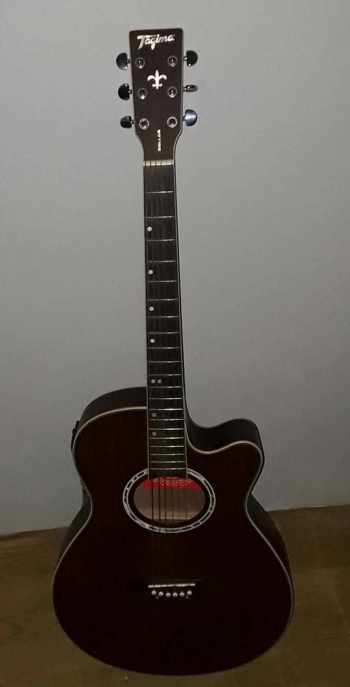
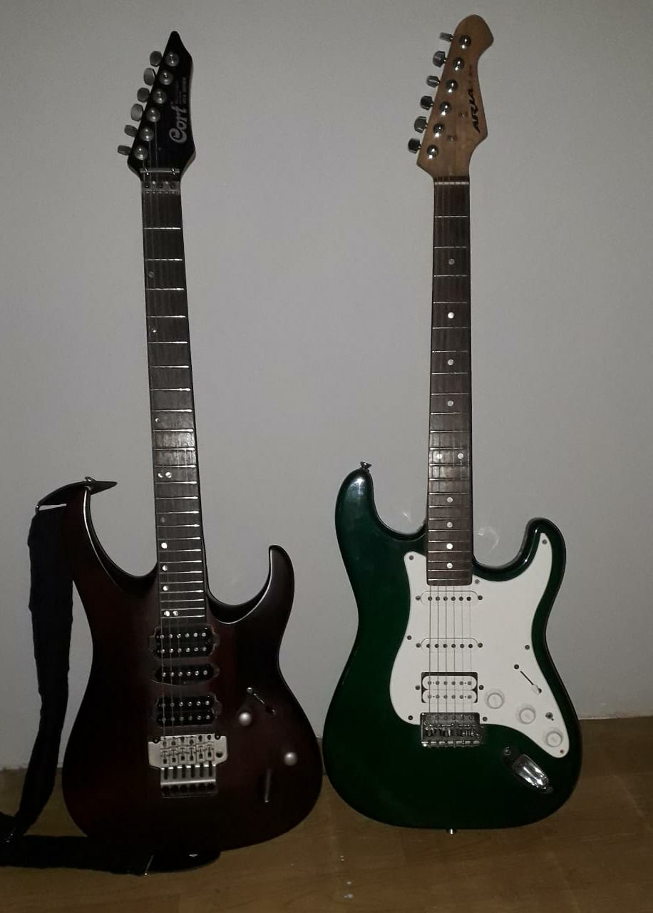
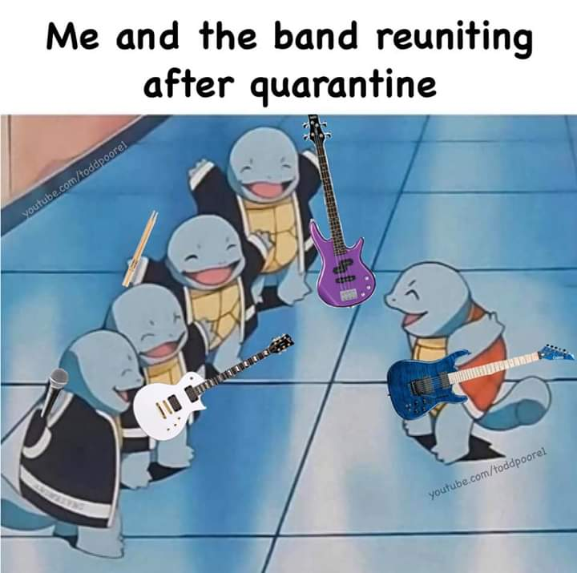

Meu hobbie consiste no estudo e na prática da música e seus intrumentos, com ênfase para os de cordas. Desde que descobri esse meu gosto pela primeira arte, nunca mais parei de praticá-la e, muito provavelmente, se extenderá pelo resto de minha vida.
Os primeiros acordes:

Comecei aos 12 anos com um simples violão
Em torno de 6 meses depois, adquiri meu segundo instrumento de cordas, que continua comigo até os dias atuais(o violão da foto)
Aprendi de forma autodidata a maioria do que sei sobre música atualmente
As primeiras composições que toquei foram do Legião Urbana e do Metallica
A necessidade por algo mais robusto:

Desde criança meu estilo sempre foi mais voltado para o rock, tendo isso em mente, alguma hora buscaria por instrumentos de maior peso musical, aí então obtive minha primeira guitarra
A primeira delas foi a stratocaster verde(a da direita) e ano passado enfim consegui minha soloist(a da esquerda)
Lembro de que no período inicial com elas procurei músicas mais "pesadas", encontrando assim meu gênero favorito atualmente, o metal.
O estudo sobre a técnica e teoria foi essencial para poder desenvolver tudo que tinha em mente e, então, tocar as obras que sempre possui vontade
O resumo da ópera:

Com isso formei diversas bandas que se mantém até hoje